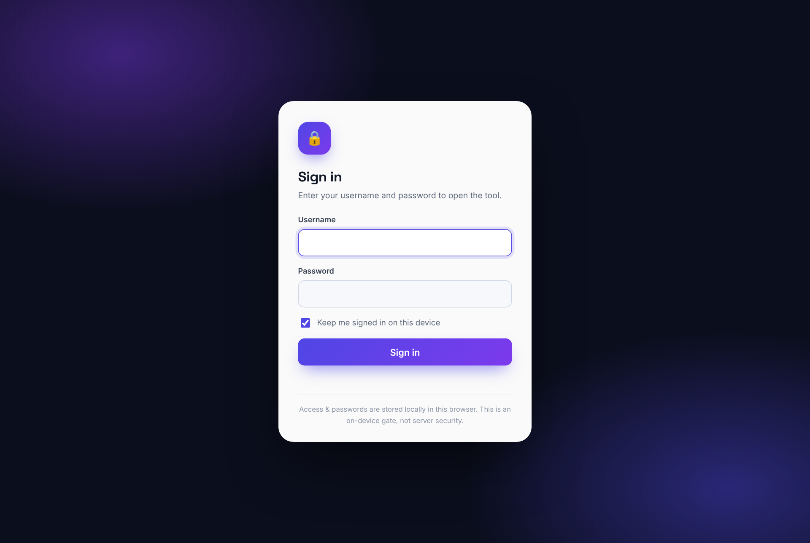
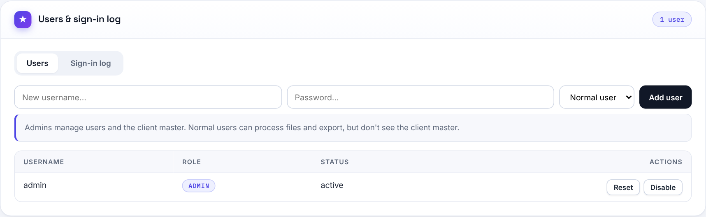
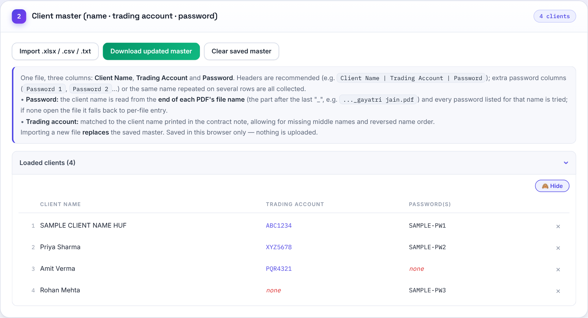
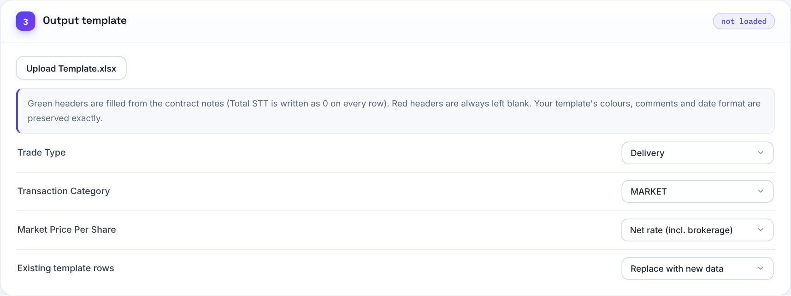
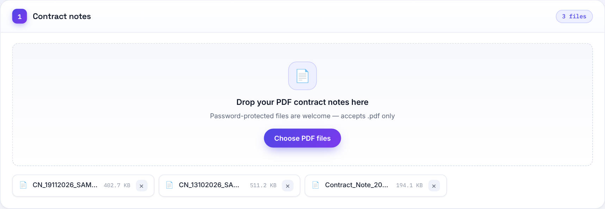
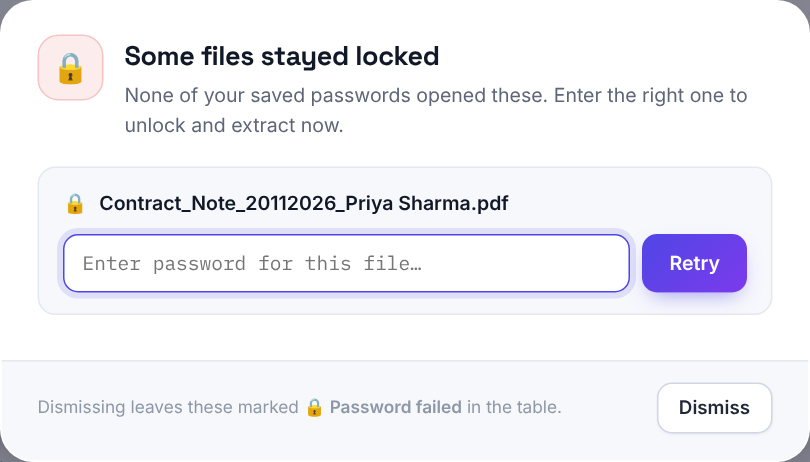
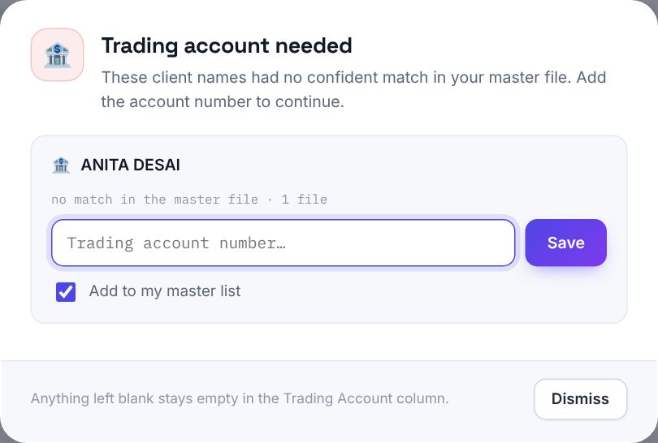
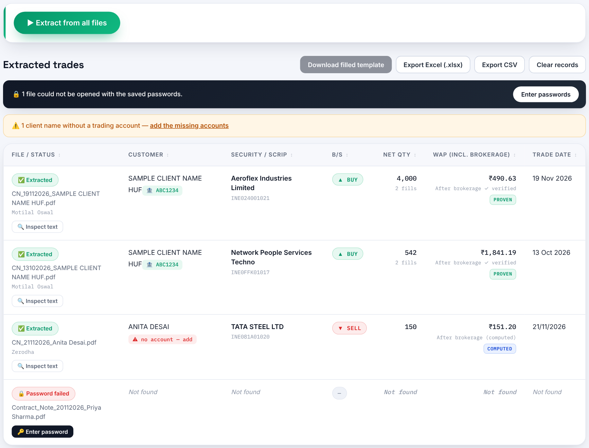
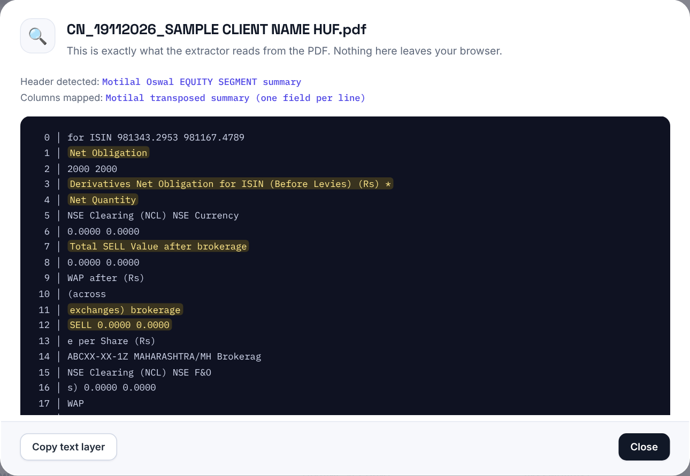
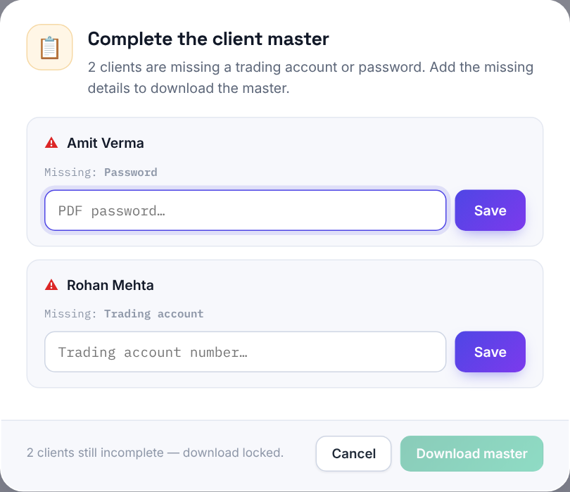

| Document number | CNE-SOP-01 |
| Version | 1.0 |
| Effective date | 23 Nov 2026 |
| Applies to | Contract Note Extractor — Windows app (Contract Note Extractor.exe) and browser version (index.html) |
| Process owner | |
| Prepared by | |
| Reviewed by | |
| Approved by |
This SOP describes how to use the Contract Note Extractor to read equity contract notes (PDF) received from brokers, unlock password-protected notes, extract each trade — client, trading account, scrip/ISIN, buy/sell, quantity, rate after brokerage (WAP) and trade date — and write them into the firm's output template (Template.xlsx) in a controlled, verifiable way.
| Role | Responsibilities |
|---|---|
| Admin | Installs the tool; creates and disables users; maintains the client master (client name, trading account, PDF password); uploads the output template and sets template options; reviews the sign-in log. |
| Operator (normal user) | Adds contract notes, runs the extraction, resolves pop-ups (locked files, missing accounts, unverified prices), reviews every row and exports the filled template. Cannot see the client master or passwords. |
| Checker | Independently verifies the exported rows against the original contract notes as per section 11 before the data is used downstream. |
Contract Note Extractor.zip to a permanent folder (e.g. D:\Tools\Contract Note Extractor) and double-click Contract Note Extractor.exe. The tool opens in its own window.admin and password admin.

One Excel/CSV file holds, for every client: Client Name, Trading Account and Password (the PDF password). Format and rules are in Appendix A.

| Option | Use |
|---|---|
| Trade Type | Delivery (default) or Intraday — written in every row. |
| Transaction Category | MARKET (default) or OFF_MARKET. |
| Market Price Per Share | Net rate (incl. brokerage) — standard. Use Market rate (excl. brokerage) only when instructed. |
| Existing template rows | Replace with new data (default) or Keep and append below. |

CN_19112026_SAMPLE CLIENT NAME HUF.pdf.
| Pop-up | What to do |
|---|---|
| 🔒 Some files stayed locked | None of the saved passwords opened the file. Type the correct password and click Retry. Then add that password to the client master (section 10) so it opens automatically next time. If unknown, dismiss — the row stays “Password failed”. |
| ₹ Price could not be verified | No brokerage figure was found, so the after-brokerage rate is unproven and the row is held back from the template. Check the note: type the after-brokerage rate and Confirm, or tick “This note has no brokerage” if that is correct. |
| 🏦 Trading account needed | The client name in the note did not match the master confidently. Pick a “Did you mean” suggestion or type the account, keep “Add to my master list” ticked, click Save. |


Locked files can be reopened at any time with Enter passwords in the dark bar above the results, or 🔑 Enter password in the row.

Each row is one scrip and side per contract note. Review every row:
| Column | Check |
|---|---|
| File / Status | ✅ Extracted expected. 🔒 Password failed or ⚠️ Parse issue must be resolved (section 12). Broker name is shown under the file name. |
| Customer | Client name as printed on the note, with the trading account in green (🏦). ⚠ no account — add means it must be added (click it). |
| Security / Scrip | Name and ISIN. Rows without ISIN are flagged in the yellow bar. |
| B/S | ▲ Buy / ▼ Sell — matches the note. |
| Net Qty | Total quantity for the scrip and side. “2 fills” means it was combined from two lines/rows of the note. |
| WAP (incl. brokerage) | Rate per share after brokerage, with how it was obtained and a badge (Appendix B). Spot-check against the note. |
| Trade Date | Trade date — not the settlement date. |
Coloured bars above the table summarise anything still open: dark — locked files; red — rows held back (price unverified); yellow — missing accounts, ISINs or trade dates. Do not export while a bar is showing unless the item has been reviewed and accepted.

Template.xlsx (colours, comments and date format kept) and saved as Template-filled.xlsx. Rows with an unverified price are left out until confirmed.Template-filled_2026-11-19.xlsx.| Template column | Filled with |
|---|---|
| A Trading Account · B Customer Name · C Trade Date | From the client master / note (date as yyyy-mm-dd) |
| H ISIN · K Quantity · L Market Price Per Share | From the note (price per the “Market Price Per Share” option, 2 decimals) |
| I Trade Type · P Transaction Category | From the template options |
| J PURCHASE / SELL · Q Buy / Sell | From the side |
| N Total STT | Always 0 |
| Red-header columns | Always left blank |
The tool recognises the broker from the note and reads its summary table. Rates are taken after brokerage and checked arithmetically (rate ± brokerage per share = rate after brokerage; quantity × rate = total value).
| Broker | What the tool reads |
|---|---|
| Motilal Oswal | “EQUITY SEGMENT” table. Client name from Client Name, trade date from Trade Date (not Settlement Date). The same ISIN often appears on two rows (BSE Capital and NSE Capital, with two spellings of the name). They are combined into one row: quantities added, rate = quantity-weighted WAP (across exchanges) after brokerage. SELL columns with 0 are ignored. |
| Zerodha | “Equity” summary per ISIN; per-order annexure ignored. Client name after the UCC code. |
| Groww | “EQUITY” summary; sell quantity printed negative; Annexure A ignored. |
| Angel One, IIFL Capital, Bajaj, Anand Rathi | “Equity Segment” per-ISIN summary with BUY / SELL after-brokerage columns. |
| ICICI Direct | “Summary including statutory levies” block per scrip; per-order detail ignored. |
| Kotak, Axis, Religare, others | Scrip-wise summary or trade table; duplicate summary/detail rows removed. |
| Row on the note | ISIN | BUY Qty | WAP after brokerage | Total BUY value |
|---|---|---|---|---|
| Aeroflex Industries Limited (BSE) | INE024001021 | 2,000 | 490.6716 | 981,343.2953 |
| AEROFLEX INDUSTRIES LTD (NSE) | INE024001021 | 2,000 | 490.5837 | 981,167.4789 |
| Tool output (one row) | INE024001021 | 4,000 | 490.6277 | 1,962,510.7742 |
Check: 1,962,510.7742 ÷ 4,000 = 490.6277. Trade date 19 Nov 2026 (settlement 20 Nov 2026 is not used).
client-master.xlsx in the secured shared folder and replace the previous version.
| Problem | Action |
|---|---|
| 🔒 Password failed | Check the client name at the end of the file name matches the client master; check the password in the master; enter it manually with Retry. |
| ⚠️ “No text layer (scanned image?)” | The PDF is an image. Request the original digital note from the broker. |
| ⚠️ “No trade table found” / “no rows matched” | Layout not recognised. Use 🔍 Inspect text and escalate (section 9 note). |
| Customer shows “Not found” or a wrong name | Escalate with Inspect text. The trading account can still be added from the pop-up. |
| Trade date is the settlement date | Correct in the template before use and escalate with Inspect text. |
| Saved data (users, master) has disappeared | Different PC, Windows user or browser, or browser data was cleared. Re-import the master and recreate users. |
| Window does not open | Make sure Edge or Chrome is installed; wait 5 minutes for an old instance to stop; start the .exe again. |
| Forgot admin password | Another admin uses Reset. If no admin can sign in, the tool's browser data must be cleared and the setup repeated. |
Contract Note Extractor.exe with the new version in the same folder. Saved data is kept.| Client Name | Trading Account | Password | Password 2 (optional) |
|---|---|---|---|
| SAMPLE CLIENT NAME HUF | ABC1234 | •••••••• | |
| Priya Sharma | XYZ5678 | •••••••• | •••••••• |
Password 2, Password 3… or repeat the client on another row. All are tried.| Badge / status | Meaning |
|---|---|
| PROVEN | Rate after brokerage proven twice: rate ± brokerage = rate after brokerage and quantity × rate = total value printed on the note. |
| COMPUTED | Rate calculated from rate ± brokerage per share (or net total ÷ quantity) but not cross-checked against a total value. |
| AS LABELLED | Taken from a column the note labels as net rate. |
| UNVERIFIED | Only a gross rate was found — held back from the template until confirmed. |
| CONFIRMED | Rate entered or accepted manually by the operator. |
| ✅ Extracted · 🔒 Password failed · ⚠️ Parse issue | File opened and trades found · no password opened the file · file opened but no trades read. |
| Step | Initials | |
|---|---|---|
| ☐ | All contract notes for the day saved; file names end with “_<client name>.pdf” | |
| ☐ | Signed in with own user; PDFs added; count matches | |
| ☐ | Extraction run; all pop-ups resolved (locked / price / account) | |
| ☐ | No dark, red or yellow bar remains (or exceptions documented) | |
| ☐ | Every row reviewed: client, account, ISIN, B/S, qty, rate, trade date | |
| ☐ | Filled template downloaded and saved with the date in the file name | |
| ☐ | Checker verification completed | |
| ☐ | Records cleared and processed PDFs removed from the tool | |
| ☐ | New passwords / accounts added to the client master; updated master downloaded |
| Version | Date | Change | By |
|---|---|---|---|
| 1.0 | 23 Nov 2026 | First issue: Windows app, single client master, Motilal Oswal support, master download check. | |